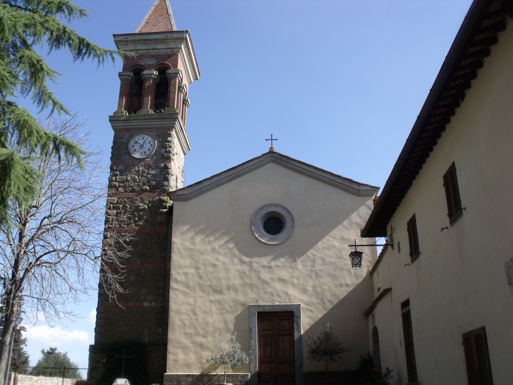
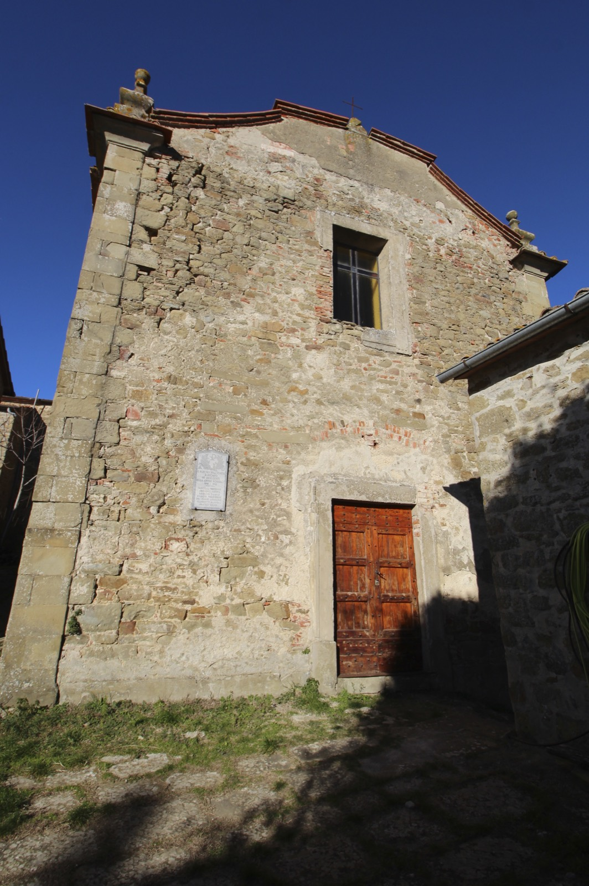
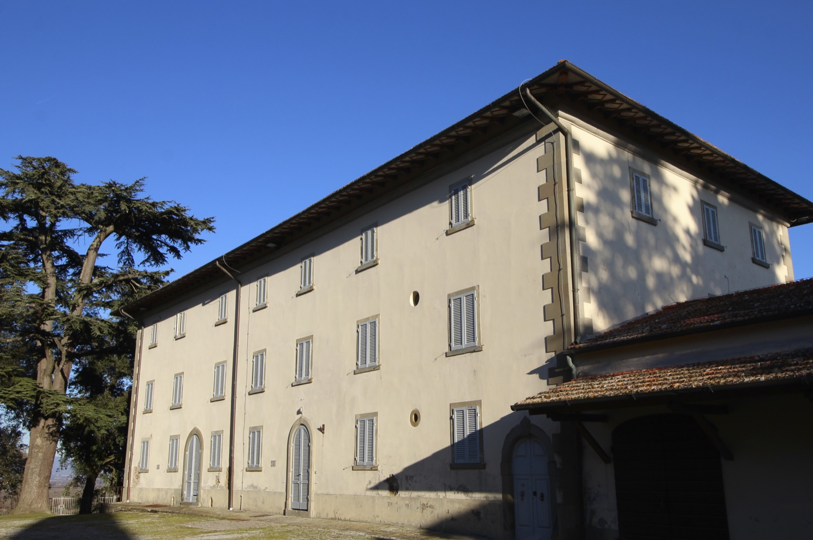
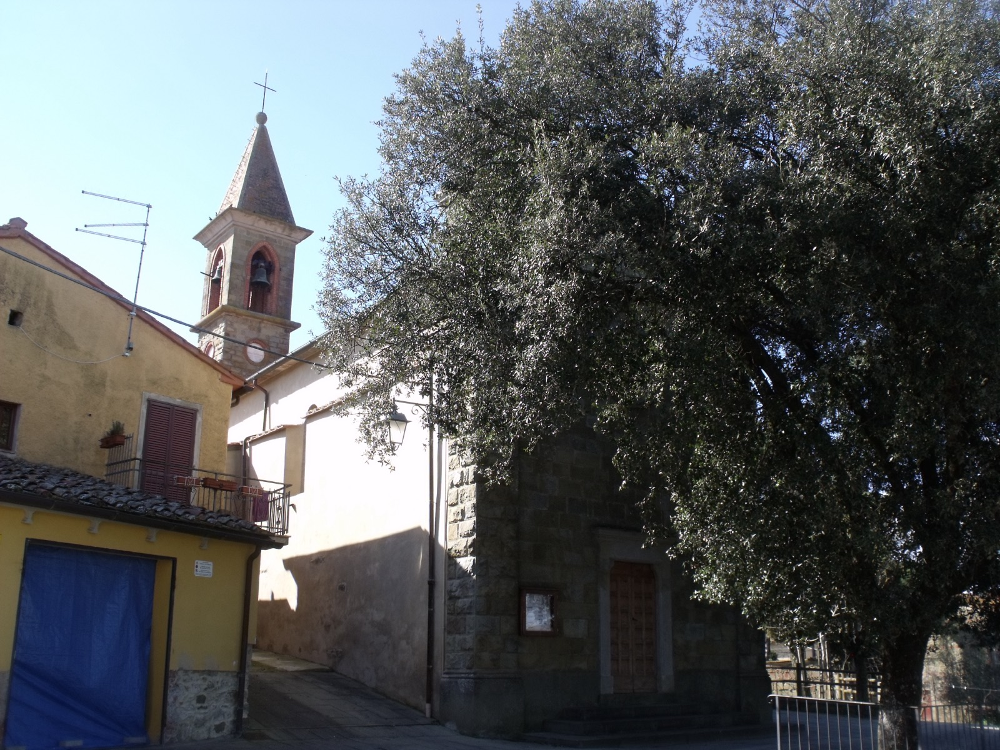
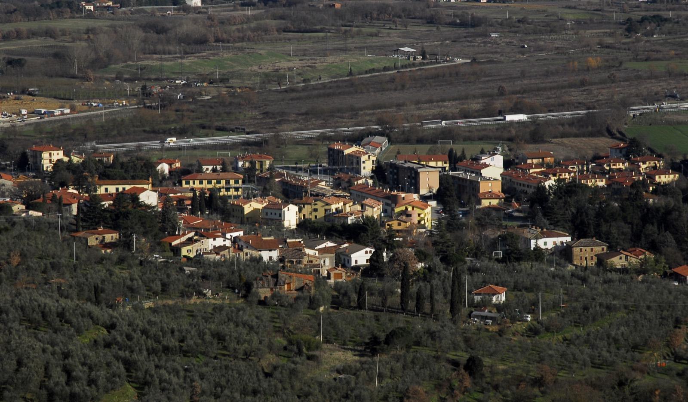

Alcune pagine hanno già un contenuto completo, altre sono ancora uno scaffold in attesa di essere popolato — il lavoro procede per iterazioni successive.
Albergo
Scopri di più

Ciggiano
Scopri di più
Cornia
Scopri di piùMatroia
Scopri di piùGebbia
Scopri di più
Oliveto
Scopri di più
Pieve a Maiano
Scopri di piùPieve al Toppo
Scopri di piùSpoiano
Scopri di piùTegoleto
Scopri di più
Tuori
Scopri di più